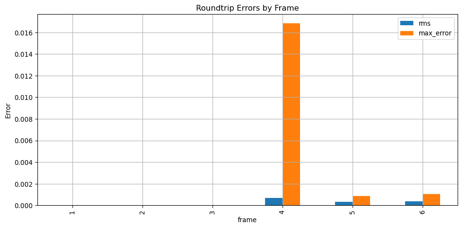

Rochester Institute of Technology, MAGIC, MPS, CIS
Published
March 31, 2025
📖 Overview
This notebook provides a comprehensive guide to validating the fidelity of EXR image sequences when encoded and decoded through ProRes 4444. It covers the entire pipeline from generating test frames, encoding them, decoding back to EXR, and analyzing the differences.
The goal is to ensure that the roundtrip process maintains the original image quality, which is crucial for visual effects and animation workflows.
This workflow requires: - Python 3.8+ with numpy, pandas, matplotlib, and seaborn - OpenColorIO for color management - OpenImageIO for image processing - ImageMagick for TIFF conversion - FFmpeg for video encoding/decoding - oiiotool for image manipulation and analysis
📦 Frame Generation
We will now generate a suite of test frames for evaluating codec roundtrip fidelity.
Note that there is a gentests.sh script that can be run to generate all the test frames and perform the roundtrip codec validation. This script is designed to be run in a Unix-like environment (Linux, macOS, WSL on Windows).
Here, we will break down the steps to generate the test frames and perform the roundtrip codec validation via some Python glue.
🔴 Red / 🟢 Green / 🔵 Blue Test Frames
Just some full frames of red, green, and blue to start with. Use oiiotool to generate these frames.
We’ll create a directory called test_frames to store all the generated frames.
In python cells, you can use an exclaimation mark ! to run shell commands. This is useful for running oiiotool, ffmpeg, and other command-line tools directly from the notebook.
import os# Create a directory for test frames - # we use this later tootest_frames_dir ="test_frames"os.makedirs(test_frames_dir, exist_ok=True)os.chdir(test_frames_dir)# Generate RGB test frames!oiiotool --pattern constant:2048x1536:32048x15363--chnames R,G,B --ch R=1,G=0,B=0-o frame_0001.exr!oiiotool --pattern constant:2048x1536:32048x15363--chnames R,G,B --ch R=0,G=1,B=0-o frame_0002.exr!oiiotool --pattern constant:2048x1536:32048x15363--chnames R,G,B --ch R=0,G=0,B=1-o frame_0003.exrprint("✅ RGB generated in "+test_frames_dir)# Change directory back to the original locationos.chdir("..")
✅ RGB generated in test_frames
🎨 ColorChecker from TIFF
This goes out to the Babel Color site to get their ColorChecker L*a*b* TIFF that has been measured and averaged over multiple charts (30 I think?). We then convert it to EXR using ImageMagick and resize it with oiiotool.1
import urllib.requestimport zipfile# go to the test frames directoryos.chdir(test_frames_dir) # Define the URL and local pathsurl ="https://babelcolor.com/index_htm_files/ColorChecker_Lab_from_X-Rite_16bit_AfterNov2014.zip"zip_path ="ColorChecker_Lab.zip"extract_path ="."# Download the file if it doesn't existifnot os.path.exists(zip_path):print("Downloading ColorChecker Lab ZIP...") urllib.request.urlretrieve(url, zip_path)else:print("ZIP file already exists. Skipping download.")# Extract the ZIP filewith zipfile.ZipFile(zip_path, 'r') as zip_ref: zip_ref.extractall(extract_path)# Do the annoying ImageMagick conversion to EXR - you _should_ be able# to do this with oiiotool, but it doesn't work for some reason.!magick ColorChecker_Lab_from_X-Rite_16bit_AfterNov2014.tif \-colorspace sRGB -depth 16-define quantum:format=floating-point \ EXR:frame_0004_tmp.exr# Resize to 2048x1536 and convert to half-float EXR!oiiotool frame_0004_tmp.exr --resize 2048x1536-d half -o frame_0004.exr# Clean up# Remove temporary filesos.remove("frame_0004_tmp.exr")os.remove("ColorChecker_Lab_from_X-Rite_16bit_AfterNov2014.tif")os.remove("ColorChecker_Lab.zip")print("✅ Color Checker downloaded and converted "+test_frames_dir)# Change directory back to the original locationos.chdir("..")
Downloading ColorChecker Lab ZIP...
✅ Color Checker downloaded and converted test_frames
📈 Generate Ramps via Python
There are scripts in the directory that already do these things, but we’ll just drop them in here for conpleteness. It turns out oiiotool used to be able to do this, but it doesn’t work anymore. So we have to use Python to generate the ramps.
The make_quantized_ramp_exr.py script generates a quantized ramp image, while the make_ramp_exr.py script generates a linear ramp image.
Regular Ramp
import OpenImageIO as oiioimport numpy as npimport sysW, H =2048, 1536ramp = np.linspace(0, 1, W, dtype=np.float32)ramp_2d = np.tile(ramp, (H, 1))rgb = np.stack([ramp_2d]*3, axis=2)spec = oiio.ImageSpec(W, H, 3, "float")buf = oiio.ImageBuf(spec)buf.set_pixels(oiio.ROI(0, W, 0, H), rgb)output_filename = test_frames_dir+'/frame_0005.exr'buf.write(output_filename)print("✅ Wrote ramp to "+output_filename)
✅ Wrote ramp to test_frames/frame_0005.exr
Quantized Ramp
Same thing as above, but we’re quantizing it to 10-bit to mimic the 4:2:2 ProRes HQ we’re messing with from Kodak’s scanner.
import OpenImageIO as oiioimport numpy as npimport sysW, H =2048, 1536levels =1024# Simulate 10-bit ProRes quantization# Create a quantized horizontal rampramp = np.linspace(0, 1, levels, endpoint=True, dtype=np.float32)ramp = np.repeat(ramp, W // levels +1)[:W] # Extend to W pixelsramp_2d = np.tile(ramp, (H, 1))rgb = np.stack([ramp_2d] *3, axis=2)spec = oiio.ImageSpec(W, H, 3, "float")buf = oiio.ImageBuf(spec)buf.set_pixels(oiio.ROI(0, W, 0, H), rgb)output_filename = test_frames_dir+f'/frame_0006.exr'buf.write(output_filename)print("✅ Wrote quantized ramp to "+output_filename)
✅ Wrote quantized ramp to test_frames/frame_0006.exr
🎞️ Encode to ProRes HQ
Now that we have the test frames, we can encode them to ProRes HQ. This is done using ffmpeg, a powerful tool for video processing. The command below encodes the EXR frames into a ProRes 4444 MOV file. The -pix_fmt yuv444p10le option specifies the pixel format, and -profile:v 4 sets the ProRes profile to 4444. If we prefer a 4:2:2 profile, we can use -profile:v 3 instead.
Let’s do this with straight python, no bash, for now. This way you can see how to explicitly call the subprocesses if you want. (It also lets us do some variable substitution.)
from subprocess import runoutput_file =f"test_output.mov"run(["ffmpeg","-hide_banner", "-loglevel", "error", "-y","-r", "24","-start_number", "1","-i", f"{test_frames_dir}/frame_%04d.exr","-frames:v", "6","-c:v", "prores_ks","-profile:v", "4","-pix_fmt", "yuv444p10le", output_file])print("✅ Wrote movie to "+output_file)
✅ Wrote movie to test_output.mov
📥 Decode to TIFFs, Convert to Linear EXRs
The ‘clean’ way to do this, according to the FFmpeg documentation, is to dump as TIFFs and then convert to EXRs. This is done using ffmpeg to decode the MOV file back into TIFF frames, and then using oiiotool to convert the TIFFs to EXR format with linear color space.
Again, straight python, because we’re doing some variable substitution.
import glob# Define pathstiff_dir ="tiff_frames"exr_dir ="exr_frames"ocio_config ="./ocio_rec709_to_linear/config.ocio"os.makedirs(tiff_dir, exist_ok=True)os.makedirs(exr_dir, exist_ok=True)# Run the ffmpeg command to extract TIFF framesrun(["ffmpeg", "-hide_banner", "-loglevel", "error", "-y","-i", "test_output.mov","-pix_fmt", "rgb48le","-start_number", "1", tiff_dir+"/frame_%04d.tif"])# Process each TIFF filefor tiff_file in glob.glob(f"{tiff_dir}/*.tif"): exr_file = os.path.join(exr_dir, os.path.basename(tiff_file).replace(".tif", ".exr")) run(["oiiotool", tiff_file,"--colorconfig", ocio_config,"--colorconvert", "srgb_display", "linear","-d", "half","-o", exr_file ])print("✅ TIFFs extracted and converted to EXR in "+exr_dir)
✅ TIFFs extracted and converted to EXR in exr_frames
🔎 Compute Differences & Export Heatmaps
OK - here’s the cool part. Let’s compute some differences, compute some heatmaps of the differences, etc.
First - a utility to compute some metrics via colour-science.
import colourfrom colour.models import RGB_to_XYZ, XYZ_to_Lab, RGB_COLOURSPACESimport redef compute_diff_metrics(diff_txt_path):import refrom colour.models import RGB_to_XYZ, XYZ_to_Lab, RGB_COLOURSPACESimport colourwithopen(diff_txt_path, "r") as f: lines = f.readlines() mean =float([line for line in lines if"Mean error"in line][0].split()[-1]) rms =float([line for line in lines if"RMS error"in line][0].split()[-1]) psnr =float([line for line in lines if"Peak SNR"in line][0].split()[-1]) max_error_line = [line for line in lines if"Max error"in line][0] match = re.search(r'Max error\s*=\s*([\d.]+)\s*@.*values are ([\d., ]+) vs ([\d., ]+)', max_error_line ) max_error =float(match.group(1)) orig_rgb = [float(x.strip()) for x in match.group(2).split(',')] roundtrip_rgb = [float(x.strip()) for x in match.group(3).split(',')]# Use BT.709 as the working colourspace colourspace = RGB_COLOURSPACES["ITU-R BT.709"]# Convert RGB → XYZ → Lab orig_xyz = RGB_to_XYZ(orig_rgb, colourspace) roundtrip_xyz = RGB_to_XYZ(roundtrip_rgb, colourspace) orig_lab = XYZ_to_Lab(orig_xyz) roundtrip_lab = XYZ_to_Lab(roundtrip_xyz) delta_e = colour.delta_E(orig_lab, roundtrip_lab, method='CIE 1976')return mean, rms, psnr, max_error, orig_rgb, roundtrip_rgb, delta_e
Now, we iterate through the images, do the computations…
import pandas as pd# Define pathsdiff_dir ="diff_frames"diff_data_dir ="diff_data"# Create directories for resultsos.makedirs(diff_dir, exist_ok=True)os.makedirs(diff_data_dir, exist_ok=True)# Initialize a list to store diff metricsdiff_metrics = []# Process each frameexr_files =sorted(glob.glob(f"{test_frames_dir}/frame_*.exr"))for i, exr_path inenumerate(exr_files, start=1): frame_id =f"{i:04d}" original_frame = os.path.join(test_frames_dir, f"frame_{frame_id}.exr") roundtrip_frame = os.path.join(exr_dir, f"frame_{frame_id}.exr") diff_frame = os.path.join(diff_dir, f"frame_{frame_id}_diff.exr") diff_png = os.path.join(diff_dir, f"frame_{frame_id}_diff.png") tmp_diff_file = os.path.join(diff_data_dir, f"diff_{frame_id}.txt") run(["oiiotool", original_frame, roundtrip_frame,"--diff", "--fail", "1e-06", "--hardfail", "1e-03","-o", diff_frame ], stdout=open(tmp_diff_file, "w"))withopen(tmp_diff_file, "r") as f: diff_output = f.read()if"PASS"in diff_output:# print(f"Frame {frame_id}: PASS (no significant differences)") mean = rms = psnr = max_error = delta_e ="NA" orig_rgb = roundtrip_rgb = ["NA", "NA", "NA"]else: mean, rms, psnr, max_error, orig_rgb, roundtrip_rgb, delta_e = compute_diff_metrics(tmp_diff_file)def format_metric(label, value):ifisinstance(value, float):returnf"{label:<24}{value:.6f}"else:returnf"{label:<24}{value}"# print(f"Frame {frame_id}:")# print(format_metric("Mean error:", mean))# print(format_metric("RMS error:", rms))# print(format_metric("PSNR:", psnr))# print(format_metric("Max error:", max_error))# print(format_metric("ΔE* (CIE76):", delta_e))# print(f"{'Original RGB:':<24} {orig_rgb}")# print(f"{'Roundtripped RGB:':<24} {roundtrip_rgb}") diff_metrics.append({"frame": frame_id,"mean": mean,"rms": rms,"psnr": psnr,"max_error": max_error,"orig_r": orig_rgb[0],"orig_g": orig_rgb[1],"orig_b": orig_rgb[2],"roundtrip_r": roundtrip_rgb[0],"roundtrip_g": roundtrip_rgb[1],"roundtrip_b": roundtrip_rgb[2],"delta_e": delta_e })# Generate a heatmap for the difference run(["oiiotool", diff_frame,"--mulc", "50", "--clamp:low=0", "--clamp:high=1","-o", diff_png ])# Save the metrics to a CSV filediff_metrics_df = pd.DataFrame(diff_metrics)diff_metrics_df.to_csv(diff_data_dir+f"/diff_summary.csv", index=False)print("✅ Diff metrics and heatmaps generated successfully.")
✅ Diff metrics and heatmaps generated successfully.
We now have fully traceable artifacts for visual and statistical inspection.
🔎 Diff Metrics and Heatmaps
Each original frame is compared to its roundtripped EXR using oiiotool --diff. Metrics are collected into a CSV for easy viewing:
import pandas as pdimport matplotlib.pyplot as pltimport seaborn as snsmetrics = pd.read_csv("diff_data/diff_summary.csv")metrics.set_index("frame", inplace=True)metrics[["mean", "rms", "psnr", "max_error"]]
mean
rms
psnr
max_error
frame
1
NaN
NaN
NaN
NaN
2
NaN
NaN
NaN
NaN
3
NaN
NaN
NaN
NaN
4
0.000551
0.000679
63.3594
0.016846
5
0.000280
0.000334
69.5221
0.000858
6
0.000296
0.000357
68.9481
0.001063
📈 Error vs Frame
metrics[["rms", "max_error"]].plot(kind="bar", figsize=(10, 5), title="Roundtrip Errors by Frame")plt.ylabel("Error")plt.grid(True)plt.tight_layout()

🌈 Visual Comparison
🔥 Difference Maps
You can inspect the absolute difference between original and roundtrip EXRs:
🧪 Notes for Students
The ProRes 4444 format retains more precision than standard 422, but still compresses chroma
ColorChecker conversion was done from Lab TIFF using ImageMagick (due to lack of Lab support in OCIO)
Linear ramps suffer most from quantization
📁 Artifacts
All generated files are available locally:
test_frames/
tiff_frames/
exr_frames/
diff_frames/
diff_data/diff_summary.csv
✅ Wrap-up
This notebook supports understanding of:
Visual error inspection in roundtrip workflows
Codec selection trade-offs
Role of OCIO and color conversion
Let your students modify the test script, add other codecs, or introduce OCIO transforms to explore further.
Footnotes
We have to use ImageMagick to convert from Lab to RGB because OCIO does not support Lab as a source color space. This is a limitation of the OCIO config we are using.↩︎